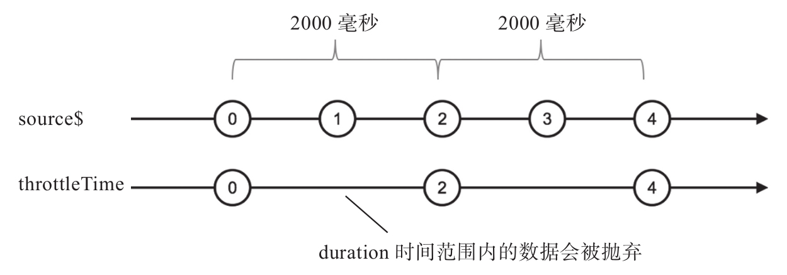
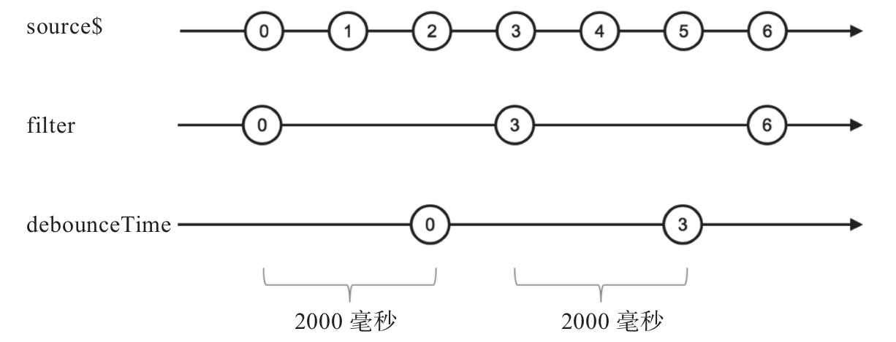
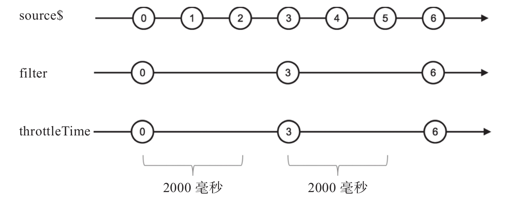
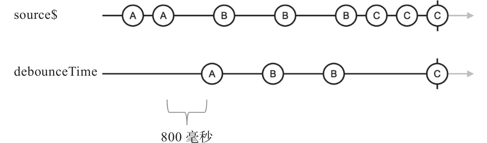
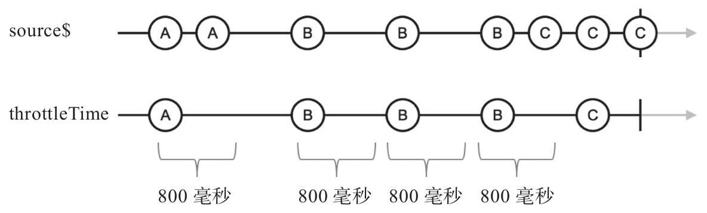
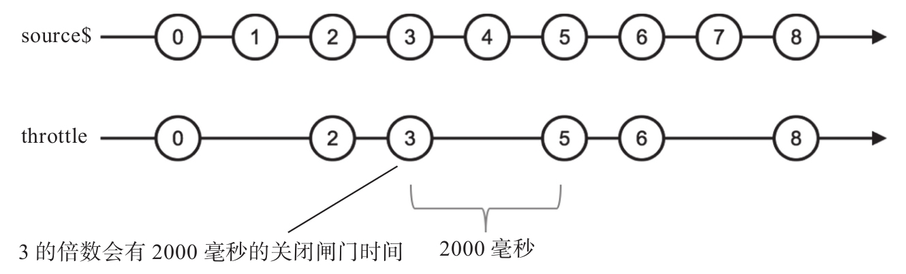
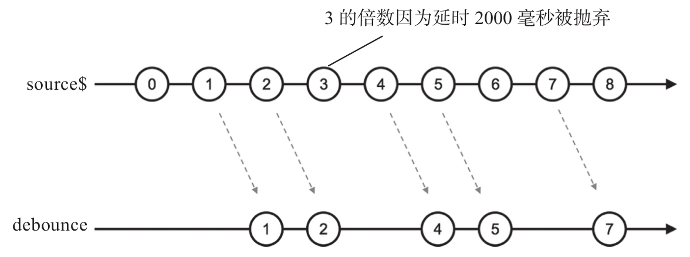

在实际应用中，经常需要限制某种事情发生的次数，下面是一些具体例子：
·鼠标移动事件的处理函数。
·屏幕滚动事件的处理函数。
·渲染网页的函数。
·数据管道中处理数据的函数。
就拿网页中鼠标移动事件的处理函数来说，因为用户移动鼠标的时候会持续产生鼠标移动事件，如果让每个鼠标移动事件都直接触发处理函数的执行，往往非常浪费。比如，在处理拖拽的过程中，假设鼠标在100毫秒内移动了2厘米，期间引发了20个鼠标移动事件，但是从应用的角度，真没有必要把被拖拽的网页元素重新渲染20次，只要几个关键帧能够渲染出来，计算量很少，而且给用户的感知性能一样会十分顺滑。
像这样过滤大量事件只留下关键事件的方法，在前端开发中非常常见，传统上有throttle和debounce两种方法。
throttle可以翻译成“节流”，debounce勉强可以翻译成“去抖动”，但是这样的翻译不够信达雅，所以本书中直接使用这两个概念的英文名称。
包括jQuery和lodash在内的很多库有throttle和debounce这两个函数，但是，这些库的这两个函数名功能上对应的是RxJS中的throttleTime和debounceTime这两个操作符，和在RxJS中名称是throttle和debounce的两个操作符很不一样。
为了理解RxJS的throttle和debounce，让我们先理解throttleTime和debounceTime。
1.基于时间控制流量：throttleTime和debounceTime
这两个操作符名字包含Time，参数也就是代表毫秒数的时间。对于throttle，这个时间参数称为duration；对于debounceTime，这个时间参数称为dueTime。
throttleTime的作用是限制在duration时间范围内，从上游传递给下游数据的个数；debounceTime的作用是让传递给下游的数据间隔不能小于给定的时间dueTime。
第一眼看上面的描述，你可能会觉得这两个操作符的功能是一模一样的，但是其实有很大差别，我们用实际代码来看看差别在哪里。
使用throttleTime的示例代码如下所示：
import {Observable} from 'rxjs/Observable';
import 'rxjs/add/observable/interval';
import 'rxjs/add/operator/throttleTime';
const source$ = Observable.interval(1000);
const result$ = source$.throttleTime(2000);
result$.subscribe(
console.log,
null,
() => console.log('complete')
);
其中，throttleTime的参数duration是2000，代表上游source$中产生的数据，2000毫秒之内只有一个数据会传给下游，程序的执行结果如下：
0 2 4
虽然source$会产生0开始递增的序列，但是1、3、5这些数据会被过滤掉。
当source$产生数据0时，因为这是第一个数据，所以完全不受任何影响被throttleTime传给了下游，但是throttleTime同时开始计时，在给下游传递了一个数据之后的2000毫秒范围内，所有来自上游source$的数据都被抛弃，通过这种方式保证在2000毫秒范围内只给下游唯一的一个数据。
于是，source$在第1000毫秒时刻产生的数据1就被throttleTime抛弃了，但是source$产生的数据2正好赶上2000毫秒的时限到期，所以数据2被throttleTime传给了下游，但是throttleTime会立刻又开始计时，重复上面的步骤，在接下来的2000毫秒时间范围内抛弃所有上游传递下来的数据，所以数据3又被抛弃了。
图7-11展示了throttleTime的弹珠图。

图7-11 throttleTime的弹珠图
最终，throttleTime产生的Observable对象中数据都是在偶数秒时刻产生的source$数据。
对上面的代码做一点点修改，把throttleTime换成debounceTime，看看什么结果，修改的代码部分如下：
import {Observable} from 'rxjs/Observable';
import 'rxjs/add/observable/interval';
import 'rxjs/add/operator/debounceTime';
const source$ = Observable.interval(1000);
const result$ = source$.debounceTime(2000);
运行这样的代码不会产生任何结果，为什么会这样呢？
因为debounceTime要等上游在dueTime毫秒范围内不产生任何其他数据时才把这个数据传递给下游，如果在dueTime范围内上游产生了新的数据，那么debounceTime就又要重新开始计时。
对于上面代码中的例子，在第1000毫秒时刻，source$产生了数据0，这时候debounceTime会记住这个“最新数据”，然后开始计时，如果2000毫秒范围内上游没有新的数据产生，就会把这个“最新数据”传给下游。很可惜，还没等到2000毫秒计时结束，source$就产生了数据1，这时候debounceTime就会抛弃之前记录的数据0，改为记住1作为“最新数据”，然后开始全新的2000毫秒计时，如果2000毫秒范围内上游没有新的数据产生，就会把这个“最新数据”1传给下游，很可惜，source$又产生了数据2……
如此周而复始，source$不断以比debounceTime的参数dueTime更小的时间间隔产生数据，那么debounceTime的计时就不断重新启动，也就永远不会有机会往下游传递数据。
可以把debounceTime的动作想象为向上拍一个气球，气球往下坠落，但是我们每隔一段时间朝上拍打气球，只要气球一次上升下降花费的时间比我们拍气球的间隔时间长，那么气球就永远不会有落地的机会，气球要落地，唯一的机会就是能在我们出手拍它之前就降落下来，换句话说，上游数据要能够通过debouceTime，时间间隔就必须要比debounceTime的参数大。
为了展示debounceTime也能够让数据传给下游，我们修改上面的代码，如下所示：
const source$ = Observable.interval(1000); const filter$ = source$.filter(x => x % 3 === 0); const result$ = filter$.debounceTime(2000);
现在数据源source$依然是间隔1000毫秒产生数据，但是我们利用filter过滤掉一些数据，只让能够整除3的数据通过，然后使用debounceTime来做流量控制。
修改之后，程序的输出如下：
0 3 6
通过弹珠图可以看清楚所有数据的时机，如图7-12所示。

图7-12 debounceTime的弹珠图
从上面的弹珠图可以看出，因为filter的作用，过滤掉了一些让debounceTime不断重置计时的数据。
当source$产生数据0之后，经过filter的过滤，对debounceTime来说上游2000毫秒范围内都没有数据产生，所以在接收到数据0之后的2000毫秒时刻，debounceTime会把数据0传给下游。之后，debounceTime还会接收到数据3，同样的处理，在延时2000毫秒确认上游不会在这个时间范围内产生新的数据前提下，debounceTime再把数据3传给下游。
上面的代码如果把debounceTime改为throttleTime，会是怎样的结果？代码如下：
const source$ = Observable.interval(1000); const filter$ = source$.filter(x => x % 3 === 0); const result$ = filter$.throttleTime(2000);
这样修改之后，程序的输出依然是这样，如下所示：
0 3 6
但是，输出产生的时机和使用debounceTime不同了，从图7-13中可以看出差异。
从弹珠图上可以看出，throttleTime产生的数据流和通过filter过滤产生的数据流一致，因为throttleTime获得上游数据之后先扔给下游，然后开始计时；而debounceTime获得上游数据之后先开始计时，只有计时范围内没有新的数据产生，才把缓存了的数据传给下游。

图7-13 filter和throttleTime的弹珠图
使用throttleTime和debounceTime的一个常见场景就是用来减少不必要的DOM事件处理。例如，在购物类网站中，用户当然可以通过多次点击“添加到购物车”来购买多个同一商品，但是为了防止用户点击过快，可以限定一秒钟之内最多添加一次商品，这时候就用得上throttleTime，示例代码如下：
const click$ = Rx.Observerable.fromEvent(addToCartButton, "click"); click$.throttleTime(1000).subscribe(addToCardHandler);
上面使用throttleTime是从保证功能正确上考虑。还有一些场景使用throttleTime可以提高运行性能，比如对鼠标移动事件的处理，因为当鼠标移动时，会有持续不断的mousemove事件产生，并没有必要对每一个事件进行处理，这时候就可以用throttleTime来过滤一遍鼠标移动事件。
当数据流中可能有大量数据产生，我们希望一段时间内爆发的数据只有一个能够被处理到，这时候就应该使用throttleTime。
对于debounceTime，适用情况是，只要数据在以很快的速度持续产生时，那就不去处理它们，直到产生数据的速度降下来。一个常用debounceTime的场景是对网页scroll事件的处理，当一个网页上下滚动的时候，可能需要动态加载一些图片，可能需要发出一些AJAX请求获得更多资源，但是，只要scroll事件持续产生，说明用户滚动网页的动作没有停下来。用户可能快速往下滚动，那么，中间一闪而过的模块中图片用户也不会看到，没有必要去加载；用户可能滚到网页底部不停然后又快速滚回网页顶部，这样也没有必要去发送AJAX获取更多资源。对于scroll的处理，就适合用debounceTime，只要用户还在滚动网页没停下来，就没有必要引发事件处理，示例代码如下：
const scroll$ = Rx.Observerable.fromEvent(window, "scroll"); scroll$.debounceTime(200).subscribe(scrollHandler);
其中，只有当用户滚动网页然后停下来200毫秒之后，才会触发scrollHandler函数。
被throttleTime和dobounceTime处理的Observable对象肯定不会像上面一样都是规规矩矩一个频率产生数据，比如通过fromEvent获取浏览器DOM事件的数据流，完全无法预期数据什么时候产生。为了展示不固定频率下的过滤行为，我们利用interval、concat和take组合出一个产生数据频率比较“错乱”的Observable对象，然后用debounceTime来过滤，代码如下：
const source$ = Observable.interval(500).take(2).mapTo('A')
.concat(Observable.interval(1000).take(3).mapTo('B'))
.concat(Observable.interval(500).take(3).mapTo('C'));
const result$ = source$.debounceTime(800);
其中，source$的数据流可以分为三个阶段：
第一阶段，以500毫秒间隔产生2个数据A；
第二阶段，以1000毫秒间隔产生3个数据B；
第三阶段，持续以500毫秒产生3个数据C。
通过图7-14可以看到debounceTime会产生什么样的数据流。

图7-14 debounceTime的弹珠图
从图中可以看见，第一阶段只有最后一个A才有机会进入下游，因为产生数据之间的时间间隔小于debounceTime的参数；第二阶段除了最后一个B之外，其余B都可以进入下游，因为产生数据之间的时间间隔大于debounceTime的参数；第三阶段的数据只有完结前的最后一个C进入了下游，因为最后一个数据的计时不会被打断。
总的看来很清楚，debounceTime只有在上游的数据产生的时间间隔大于参数dueTime的时候才会给下游传递数据，而且，上游完结的时候，最后一个数据总是会进入debounceTime的下游。
把上面代码中的debounceTime换成throttleTime，又会是怎样呢？代码如下：
const source$ = Observable.interval(500).take(2).mapTo('A')
.concat(Observable.interval(1000).take(3).mapTo('B'))
.concat(Observable.interval(500).take(3).mapTo('C'));
const result$ = source$.throttleTime(800);
对应的弹珠图如图7-15所示。数据流的传输过程如下：
·第一阶段，第一个产生的A进入了下游，但是第二个A因为和第一个A的时间间隔没有超过throttleTime的参数800毫秒，就被丢弃掉了。
·第二阶段，所有数据的时间间隔都超过800毫秒，所以全部都进入了下游。
·第三阶段，第一个C落在了第二阶段最后一个B的阴影之下，被丢弃了，第二个C在最后一个B的阴影之外，得以进入了下游，但是它的阴影让最后一个C被丢弃。
现在我们清楚了throttleTime和debounceTime的功能，在实际中，具体到选择throttleTime还是debounceTime，也需要根据应用特点来判断。

图7-15 throttleTime的弹珠图
举一个例子，对于一个网页中的具备自动保存的文字编辑器功能，需要定时把正在编辑的内容通过AJAX请求存储到服务器，无论从节省带宽还是提高性能的角度，都需要控制发送AJAX请求的频率，那么，应该使用throttleTime还是使用debounceTime呢？
·如果选择debounceTime，假设参数dueTime为200，那么只要用户不停地在文字编辑器中敲打键盘，每次按键之间的间隔不超过200毫秒，那么，就一直不会引发AJAX请求，直到用户停止敲打之后200毫秒，才有一个AJAX发给服务器端存储内容。这种做法可以有效地减少不必要的AJAX请求，不过，假如用户才思泉涌一口气写了几千字，不停地敲打键盘，但是写着写着浏览器突然崩溃了，那么因为debounceTime一直让保存内容的AJAX请求发不出去，用户输入的内容也就全丢了，如果考虑这种情况，使用debounceTime看起来就不是一个好的选择。
·如果选择throttleTime，那就可以保证一段时间总是会有一个AJAX保存当前用户输入，当然，使用throttleTime绝对不能使用200参数，不然用户只要在持续输入，每200毫秒就会发送一次AJAX请求，实在太频繁了。
无论是用throttleTime还是用debounceTime，都要根据应用场景选择合适的时间参数。比如，上面利用debounceTime来减少scroll事件的处理本来是为了提高性能，因为正常人的感知特点，200毫秒延时是一个比较恰当的值；但是如果把参数改为1000，那样虽然可能减少更多的scroll事件处理，但是对用户感知性能却有伤害。
2.用数据流来控制流量
了解了throttleTime这debounceTime之后，再来了解throttle和debounce就不难了。throttle和debounce和不带Time后缀的兄弟操作符的区别是，这两个操作符不是用时间来控制流量，而是用Observable中的数据来控制流量。
先来看throttle，throttle的参数是一个函数，这个函数应该返回一个Observable对象，这个Observable对象可以决定throttle如何控制上游和下游之间的流量。使用throttle的示例代码如下：
import {Observable} from 'rxjs/Observable';
import 'rxjs/add/observable/interval';
import 'rxjs/add/observable/timer';
import 'rxjs/add/operator/throttle';
const source$ = Observable.interval(1000);
const durationSelector = value => {
console.log(`# call durationSelector with ${value} & ${index}`);
return Observable.timer(2000);
};
const result$ = source$.throttle(durationSelector);
result$.subscribe(
console.log,
null,
() => console.log('complete')
);
其中，throttle的上游source$每隔1秒钟产生一个数据，throttle的参数是一个叫durationSelector的函数，这个duorationSelector返回一个在2000毫秒之后产生0的Observable对象。
这段代码会产生如下的输出。
# call durationSelector with 0 0 # call durationSelector with 2 2 # call durationSelector with 4 4
throttle还真的很难用弹珠图来表示，使用文字来介绍这个过程可能更合适。
当source$产生第一个数据0的时候，throttle就和throttleTime一样，毫不犹豫地把这个数据0传给了下游，在此之前会用这个数据0作为参数调用durationSelector，然后订阅durationSelector返回的Observable对象，在这个Observable对象产生第一个对象之前，所有上游传过来的数据都会被丢弃，于是，source$产生的数据1就被丢弃了，因为durationSelector返回的Observable对象被订阅之后2000毫秒才会产生数据。
这个过程，相当于throttle每往下游传递一个数据，都关上了上下游之间闸门，只有当durationSelector产生数据的时候才打开这个闸门。到了2000毫秒的时刻，durationSelector第一次被调用产生的Observable对象终于产生了一个数据，闸门被打开，source$产生的第二个数据2正好赶上，被传递给了下游，同时关上闸门，这时候throttle会立刻退订上一次durationSelector返回的Observable对象，重新用数据2作为参数调用durationSelector来获得一个新的Observable对象，这个新的Observable对象产生数据的时候，闸门才会再次打开。
可见，durationSelector产生Observable对象只有第一个产生的数据会有作用，而且这个数据的产生时机是关键，至于这个数据是个什么值反而不重要，在上面的例子中，使用timer来产生只有一个数据的Observable对象，当然也可以使用interval来产生多个数据的Observable对象，但是依然只有第一个数据起到作用。
如果durationSelector只是返回固定延时产生数据的Observable对象，那么throttle的功能就和throttleTime没有两样，不过，durationSelector有参数，就是当前传给下游的数据，所以完全可以根据这个参数来产生更灵活的操作。
例如，可以把上面代码中的durationSelector改为如下的实现：
const durationSelector = value => {
return Observable.timer(value % 3 === 0 ? 2000 : 1000);
};
返回的Observable对象产生数据的时间和参数相关，这样就可以有施加更多控制的可能，不像throttleTime那样只能使用固定时间。使用上面定义的durationSelector之后，对应的弹珠图如图7-16所示。
从弹珠图中可以看出，throttle通过durationSelector可以对不同的数据设定不同的节流时间。
对于debounce，和debounceTime相比一样是用一个函数参数代替了数值参数，这样就可以产生更灵活的时间控制。我们可以修改上面的代码，使用debounce来进行回压控制，如下所示：

图7-16 throttle的弹珠图
const source$ = Observable.interval(1000);
const durationSelector = value => {
return Observable.timer(value % 3 === 0 ? 2000 : 1000);
};
const result$ = source$.debounce(durationSelector);
这个过程的弹珠图如图7-17所示。

图7-17 debounce的弹珠图
durationSelector函数返回的Observable第一个数据产生时间延迟取代了debounce-Time的dueTime参数，决定了上游一个数据会被延迟多久传给下游，因为3的倍数延时2000毫秒，总是会被下一个数据“打断”，所以3的倍数总是进入不了下游。
throttle和debounce虽然提供了一个灵活的回压控制方式，但是对于大部分场景，使用低配版的throttleTime和debounceTime足够，只有当固定时间的回压控制不满足要求的时候，才有必要用上throttle和debounce。
throttle和debounce的参数durationSelector还有一个缺点，就是参数只有上游的数据，却没有数据出现的序号，假如durationSelector的参数包含序号，代码可以这样写。
const durationSelector = (value, index) => {
return Observable.timer(index * 2);
};
很可惜，上面的代码形式RxJS并不支持，但有时候，就是需要根据序号index来决定延时的时间，不得不说，没有index参数是durationSelector一个小小的遗憾。